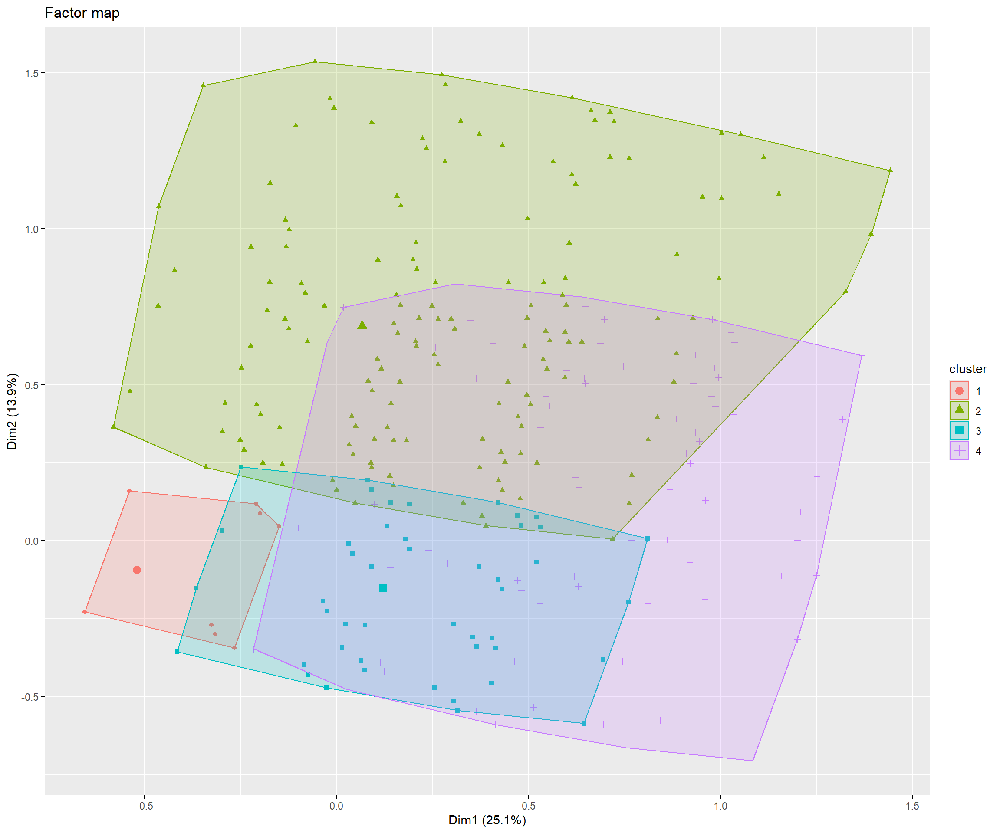

Análisis MCA y HCPC ENUSC
Análisis MCA y HCPC ENUSC
Introducción
Este documento…
Tablas

El cluster 1 se caracteriza por una sobrerepresentación de: Baja modificación de prácticas (v_test = ); No cree que será victima de delito (v_test = ) and Baja inseguridad en el barrio (v_test = )
El cluster 2 se caracteriza por una sobrerepresentación de: Cree que será victima de delito no violento (v_test = ); Baja inseguridad en el barrio (v_test = 26.65) and Baja inseguridad en espacio publico (v_test = 22.39)
El cluster 3 se caracteriza por una sobrerepresentación de: Alta disposición de medidas comunitarias (v_test = ); Baja de inseguridad en la casa (v_test = 17.73) and Baja inseguridad en el barrio (v_test = 3.28)
El cluster 4 se caracteriza por una sobrerepresentación de: Cree que será victima de delito violento (v_test = ); Baja disposición de medidas comunitarias (v_test = 26.78) and Baja de inseguridad en la casa (v_test = 25.73)
El cluster 5 se caracteriza por una sobrerepresentación de: Alta modificación de prácticas (v_test = ); Alta inseguridad en el barrio (v_test = ) and Alta inseguridad en espacio publico (v_test = )
El cluster 6 se caracteriza por una sobrerepresentación de: Alta inseguridad en la casa (v_test = ); Alta inseguridad en el barrio (v_test = 37.34) and Alta inseguridad en espacio publico (v_test = 32.06)

El cluster 1 se caracteriza por una sobrerepresentación de: Baja modificación de prácticas (v_test = ); No cree que será victima de delito (v_test = ) and Baja inseguridad en el barrio (v_test = )
El cluster 2 se caracteriza por una sobrerepresentación de: Alta disposición de medidas comunitarias (v_test = ); Baja de inseguridad en la casa (v_test = 17.73) and Baja inseguridad en el barrio (v_test = 3.28)
El cluster 3 se caracteriza por una sobrerepresentación de: Cree que será victima de delito violento (v_test = ); Baja disposición de medidas comunitarias (v_test = 26.78) and Baja de inseguridad en la casa (v_test = 25.73)
El cluster 4 se caracteriza por una sobrerepresentación de: Cree que será victima de delito no violento (v_test = ); Baja disposición de medidas comunitarias (v_test = 34.51) and Baja de inseguridad en la casa (v_test = 33.15)
El cluster 5 se caracteriza por una sobrerepresentación de: Alta inseguridad en la casa (v_test = ); Alta inseguridad en el barrio (v_test = 37.34) and Alta inseguridad en espacio publico (v_test = 32.06)

El cluster 1 se caracteriza por una sobrerepresentación de: Baja modificación de prácticas (v_test = ); No cree que será victima de delito (v_test = ) and Baja inseguridad en el barrio (v_test = )
El cluster 2 se caracteriza por una sobrerepresentación de: Alta disposición de medidas comunitarias (v_test = ); Baja de inseguridad en la casa (v_test = 17.73) and Baja inseguridad en el barrio (v_test = 3.28)
El cluster 3 se caracteriza por una sobrerepresentación de: Baja disposición de medidas comunitarias (v_test = ); Cree que será victima de delito violento (v_test = ) and Cree que será victima de delito no violento (v_test = )
El cluster 4 se caracteriza por una sobrerepresentación de: Alta inseguridad en la casa (v_test = ); Alta inseguridad en el barrio (v_test = 37.34) and Alta inseguridad en espacio publico (v_test = 32.06)

El cluster 1 se caracteriza por una sobrerepresentación de: Baja modificación de prácticas (v_test = ); No cree que será victima de delito (v_test = ) and Baja inseguridad en el barrio (v_test = )
El cluster 2 se caracteriza por una sobrerepresentación de: Cree que será victima de delito violento (v_test = ); Cree que será victima de delito no violento (v_test = ) and Baja de inseguridad en la casa (v_test = )
El cluster 3 se caracteriza por una sobrerepresentación de: Alta inseguridad en la casa (v_test = ); Alta inseguridad en el barrio (v_test = 37.34) and Alta inseguridad en espacio publico (v_test = 32.06)
El cluster 1 se caracteriza por una sobrerepresentación de: Baja de inseguridad en la casa (v_test = ); Baja inseguridad en el barrio (v_test = 37.34) and Baja inseguridad en espacio publico (v_test = 32.06)
El cluster 2 se caracteriza por una sobrerepresentación de: Alta inseguridad en la casa (v_test = ); Alta inseguridad en el barrio (v_test = 37.34) and Alta inseguridad en espacio publico (v_test = 32.06)